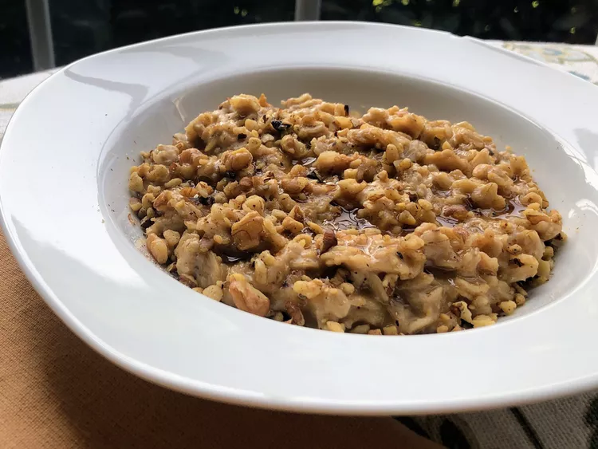

The Perfect Pancakes Recipe

Description:
This quick and easy peanut butter oatmeal, flavored with cinnamon and vanilla and topped with honey and walnuts, can be customized to your taste.
Recipe by TheDailyGourmet
Prep Time: 5 mins
Cook Time: 5 mins
Total Time: 10 mins
Ingredients:
- 1 cup 1% milk/li>
- 1 tablespoon superfine sugar
- 1 pinch salt
- 1 pinch cinnamon
- 1/2 cup oats
- 1/2 teaspoon vanilla extract
- 1 tablespoon freshly ground peanut butter
- 2 teaspoons warmed honey
- 1 tablespoon chopped walnuts (optional)
Directions:
- Combine milk, sugar, and salt in a saucepan over medium-low heat and bring to a simmer.
- Add cinnamon and oats. Cook over medium-low heat until oats are tender with a bite, about 5 minutes. Use a long spoon to stir, and adjust heat to prevent splattering.
- Remove from heat; stir in vanilla and peanut butter. Serve in a large bowl, and top with honey and walnuts.